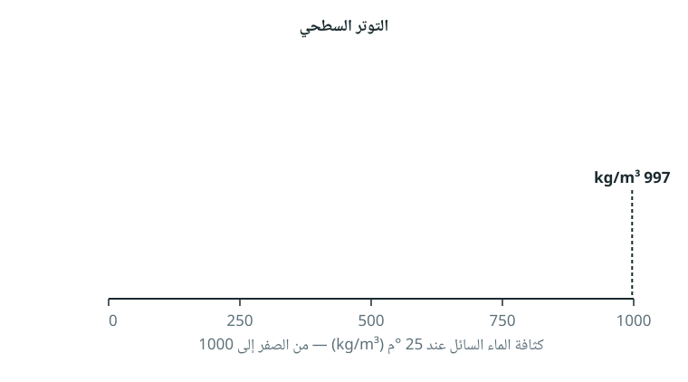

التوتر السطحي
Surface tension
التوتر السطحي هو القوة المؤثرة عمودياً على وحدة طول عند سطح سائل، ورمزه γ، ووحدته N/m، وينشأ من أن جزيئات السطح تتعرض لتجاذب غير متوازن نحو الداخل.
التوتر السطحي γ هو القوة لكل وحدة طول تؤثر على سطح سائل موازيةً للسطح وعموديةً على أي خط مرسوم عليه، ووحدته نيوتن لكل متر (N/m)، وهي مكافئة للطاقة لكل وحدة مساحة (J/m²). وينشأ من أن جزيئات السطح لها جارات أقل من جزيئات الحجم، فتكون محصلة التجاذب عليها نحو الداخل، فيقاوم السائل زيادة مساحته. ولهذا تتخذ القطرات شكلاً كروياً: الكرة أقل مساحة لسطح معطى. للماء عند 25 °م γ = 0.071 99 N/m، وللزئبق 0.485 N/m، وللإيثانول 0.022 N/m. مثال: في أنبوب شعري قطره 0.500 mm، يرتفع الماء بفعل التوتر السطحي إلى h = 2γcosθ/(ρgr) = 2 × 0.071 99 × 1.000/(997.00 × 9.806 65 × 2.50×10⁻⁴) = 0.0589 m.
كيف تعمل الظاهرة؟
في داخل السائل، كل جزيء محاط بجزيئات من كل الجهات، فتتعادل قوى التجاذب بينها. أما جزيء السطح فله جزيئات من الأسفل والجوانب فقط، فتبقى محصلة تجاذب نحو الداخل. ولذلك يبذل السائل شغلاً لسحب جزيء من الداخل إلى السطح، وهذه الطاقة هي الطاقة السطحية. والتوتر السطحي هو التعبير الميكانيكي عن هذه الطاقة: السطح يتصرف كغشاء مشدود يحاول تقليل مساحته. ولهذا تتخذ القطرات الصغيرة شكلاً كروياً، وتلتصق الحشرات بسطح الماء، وتتحد قطرات المطر. وكلما زادت الحرارة، زادت الطاقة الحرارية للجزيئات فضعف أثر التجاذب، فينخفض التوتر السطحي.
العلاقة بالأرقام
γ = F/L بوحدة N/m = J/m². وضغط لابلاس داخل فقاعة: Δp = 2γ/r (فقاعة صابون بغشاءين: Δp = 4γ/r). والارتفاع الشعري: h = 2γcosθ/(ρgr). وعدد إيوتفوس Eo = ΔρgL²/γ يقارن الجاذبية بالتوتر السطحي. مثال عددي: r = 2.50×10⁻⁴ m، γ = 0.071 99 N/m، θ = 0° → h = 0.0589 m؛ وفقاعة نصف قطرها 1.00 mm: Δp = 2 × 0.071 99/1.00×10⁻³ = 144 Pa.
مفاهيم متقاربة
يُفرَّق بين التوتر السطحي والتوتر البيني: الأول بين سائل وهواء (أو بخاره)، والثاني بين سائلين غير ممتزجين، وقيمته أصغر لأن التجاذب بين الجزيئات المختلفة لا يزال قائماً جزئياً. ويُفرَّق بين التوتر السطحي والالتصاق: الالتصاق بين سائل وسطح صلب، والتوتر السطحي داخل السائل نفسه، وزاوية التماس هي محصلة الموازنة بينهما. ويُفرَّق بين التوتر السطحي والضغط: الضغط قوة عمودية على وحدة مساحة، والتوتر السطحي قوة موازية للسطح على وحدة طول. والخطأ الشائع أن يُظن أن الصابون يزيد التوتر السطحي؛ الفاعلات السطحية تخفضه إلى الثلث تقريباً.
حدود التطبيق
التوتر السطحي خاصية للسطح النقي، ويتأثر بشدة بأي شائبة سطحية: آثار الزيوت أو المنظفات تخفضه كثيراً، فقياسات الماء «النقي» في الهواء قد تختلف بنسبة كبيرة. ويتناقص بالحرارة ويبلغ الصفر عند النقطة الحرجة حيث يزول السطح الفاصل. ولا ينطبق المفهوم على الغازات فوق الحرجية حيث لا يوجد سطح. وفي الأنابيب الدقيقة جداً (نانومترية) تتغير القيمة الفعّالة بفعل تأثيرات الجدار. وأخيراً في المحاليل ذات الفاعلات السطحية يعتمد التوتر على التركيز وفق علاقة لوغاريتمية (إيزوثيرم جيبس)، فلا يكفي رقم واحد.

| الكمية | القيمة | المصدر |
|---|---|---|
| كثافة الماء السائل عند 25 °م | 997.00 kg/m³ | [1] |
| عجلة الجاذبية القياسية g₀ | 9.806 65 m/s² | [2] |
| الارتفاع الشعري للماء في أنبوب نصف قطره 0.250 mm | 5.89 cm | [2] |
المصادر
- 1 NISTIR 5078 — Thermodynamic Properties of Water, 0 to 374 C and Pressures to 100 MPa (IAPWS-95 tabulation) — NIST — National Institute of Standards and Technology (1998). www.nist.gov/publications/thermodynamic-properties-water-temperatures-0-374-c-and-pressures-100-mpa · اطُّلع عليه 2026-11-21
- 2 CODATA Value: standard acceleration of gravity — NIST — CODATA 2022 recommended values (2024). physics.nist.gov/cgi-bin/cuu/Value?gn · اطُّلع عليه 2026-11-21
- 3 CODATA Value: Boltzmann constant — NIST — CODATA 2022 recommended values (2024). physics.nist.gov/cgi-bin/cuu/Value?k · اطُّلع عليه 2026-11-21
استشهد بهذا المصطلح
الصيغتان مبنيتان من بيانات الصفحة نفسها: العنوان والتاريخ ورابط النسخة المنشورة.
التوتر السطحي — Surface tension. (2026). ديوان المعرفة — انفراد. https://infiradev.com/diwan/terms/term-surface-tension.html
@misc{term-surface-tension2026,
title = {التوتر السطحي},
titleaddon = {Surface tension},
howpublished = {{ديوان المعرفة — انفراد} — مرجع علمي عربي},
year = {2026},
url = {https://infiradev.com/diwan/terms/term-surface-tension.html},
urldate = {2026-11-26},
note = {مراجعة علمية: hermes (مراجعة معتمدة 2026-11-26)}
}
راجعه: hermes (مراجعة معتمدة 2026-11-26) · 2026-11-26 · آخر تحديث 2026-11-21